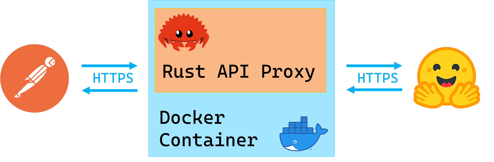

Project Repo: https://github.com/athletedecoded/hf-micro

IDS721 Spring 2023 Project 2 - Rust Containerized Microservice
The HuggingFace Hub is implemented as a Python wrapper around the HuggingFace API Endpoints. This project is a distroless and containerized Rust microservice that acts as an API proxy for the HuggingFace API Endpoints. Github Actions allows for automated CI/CD to Azure Containers.

What I Learnt
- Configuring reqwest for GET, POST, PUT, DELETE requests
- Certifying HTTPS using reqwest from within a Docker image -- I spent days debugging and exhausting certification solutions and it all came down to enabling the rustls-tls feature in reqwest and either installing debian ca-certificates or mounting them to Docker at runtime 🤯
- CI/CD with Github Actions to automate Azure container deployment
Setup
Install
$ make install
HuggingFace Access Token
- Generate a HuggingFace personal access token with write permissions
- Configure environment variables below per choice of launching locally or within Docker
To launch locally
- Rename
SAMPLE_ENVto.envand save - Set your HF personal access token in
.env - Run local microservice on localhost:8080
$ make run
To launch within Docker
- Set your HF personal access token in Makefile (line 2)
- Build Docker image
$ make build
Gotchas if you encounter a build failure on "ERROR [internal] load metadata ..." then run
$ rm ~/.docker/config.json
$ make build
- Run Docker image
$ make rundocker
Docker Debugging CA-Certificates
If you have CA-certification issues you may need to manually mount self-signed certificates to the Docker image instead. To do this first generate .pem certificate
# make local certs dir
$ mkdir ./certs
# generate ca-certificates
$ openssl req -x509 -newkey rsa:4096 -keyout ./certs/key.pem -out ./certs/cert.pem -sha256 -days 365 -nodes -subj '/CN=localhost'
Then launch Docker image with mounted certificates
$ make mntcerts
Deploy to Azure
- Provision an Azure Container App and set repository PAT, AZURE_CREDENTIALS secrets according to this repo docs
- Ensure Container App
ingresssetting matches port "8080" - Set a repository secret
HFATto your HuggingFace Access Token git push origin deploy-distrothen manually trigger workflow from GitHub Actions
Useage & Endpoints
Supported endpoints to base URL https://localhost:8080
GET / -- Homepage
GET /api/account -- Returns your HuggingFace account info
POST /api/repo -- Create a new repository
```
POST /api/repo json request body
{
"type": <"model","dataset" or "spaces">
"name": <repo_name>,
"private": <true or false>
}
```
DELETE /api/repo -- Delete a repository
```
DELETE /api/repo json request body
{
"type": <"model","dataset" or "spaces">
"name": <repo_name>
}
```
PUT /api/repo -- Update repository visibility
```
PUT /api/repo json request body
{
"type": <"model","dataset" or "spaces">
"namespace": "<username>/<repo_name>" eg. "ferris/my_repo"
"private": <true or false>
}
```
ToDos
- Configure GET, POST, DELETE, PUSH routes
- Pass environment variables into Docker per docs
- Debug reqwest x Rust x Docker CA Certificate bug
- Configure Actix logging
- Actix HTTP error response handling
- CI/CD & Binary Release